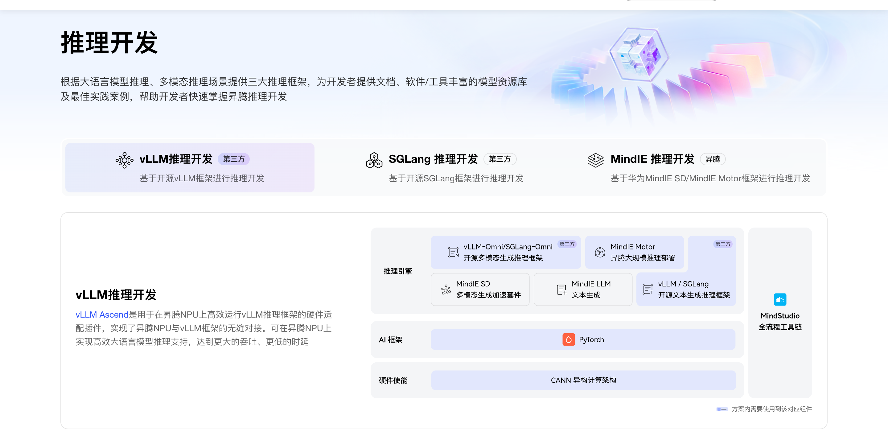

站级导读
当我们在 Cursor、企业内部 RAG、文档灌库工具等场景自建知识库时，爬虫往往只能抽到当前命中（或被打开）的这一页，而不会主动去获取整站的 llms.txt。这会导致邻篇无法进库，跨页问答断连。
站级导读是页内的兜底策略：不仅在视觉上要求 H1 标题旁必须有真实可见的入口，而且源码中必须包含一条指向 llms.txt 的真实链接。这样，用户看到的是清晰的去向，Agent 也能仅凭当前页面补齐整站文章清单。
Agent 是如何发现入口的
Agent 有两个层级的发现路径：
发现层（主路径）
按约定路径直接获取 llms.txt（位于根目录或文档站子路径）。
内容层（兜底入口）
已抓到具体页面，但未走发现层时，Agent 会从标题旁的「站点导读」链接获取清单，再按清单批量补抓邻篇。
| 行为阶段 | Agent已入库单页 | Agent解析标题旁导读 | Agent批量补抓邻篇 |
|---|---|---|---|
| 触点 | 一篇人读页的 HTML；抽取范围限定在 main 内 |
H1 同一行视觉可见的「站点导读」链接 | 导读清单中的篇链接 |
| 解决问题 | 仅入库当前页，邻篇无法进库，跨页检索断裂 | 确保视觉和代码可及；无需猜测 llms.txt 路径；不占用正文首句 |
按导读顺序批量补抓邻篇，补齐整站知识 |
| 如何到达 | 检索命中或外部链接引入，已落到该页 | H1 同一行写出动作名并指向约定路径上的 llms.txt |
Fetch 清单中的篇；需全文包时再取 llms-full.txt |
核心原则
- 视觉与源码统一入口绝不是写在代码里的隐藏挂件，必须画在 H1 标题旁边。无论是纯文本、带图标的文本还是纯图标，都要出现在用户的视觉流中，同时保证是
main里的真实<a>标签。 - 主次分明进站主路径仍按约定路径取
llms.txt（见 发现层部署）。页内补救链只是兜底，绝不能替代发现层。
典型做法
视觉上 · 标题旁落点


执行要点
- 跟标题走入口必须与 H1 主标题同一行、垂直居中对齐，落在用户扫标题的视觉重心。如图1：图标贴在 H1「推理开发」右侧。不要写进介绍段第一句，不要抢占运营 Banner 的位置。
- 主次视觉「站点导读」须符合站内链接视觉规范（颜色、下划线、图标），让用户一眼识别出它可点击。
源码上 · 真链包裹
最小合格示例
main（标题行）<main>
<div class="hub-title">
<h1>推理开发</h1>
<a href="https://docs.example.com/docs/llms.txt" aria-label="站点导读">
<img src="/assets/site-guide.png" alt="">
</a>
</div>
…正文…
</main>执行要点
- 指向约定路径
href必须使用llms.txt的绝对地址（根目录或文档站子路径）。 - 名称写在链上有文字位就直接写出「站点导读」。只用图标时，在
<a>上写aria-label="站点导读"（可兼title），img的alt务必留空；避免「更多」「AI」等无意义文案。 - 保持首包真实Agent 不认图意，可跟的是源码里的真链。图标必须落在首包已有的
<a>内。不要用 CSSbackground-image画图标，不要写 JS 悬停才插入 DOM，不要只写在<head>或页脚。
价值收益
- 用户与 Agent 双赢视觉上给了用户明确的路径，代码上给了 Agent 可靠的抓取锚点。
- 落在哪页都接得住Agent 未必从文档站路径进站，落到门户或专题页本来无从猜起。只要每页标题旁都有这条可见的真链，就都能接回发现层，不必先走对约定路径。